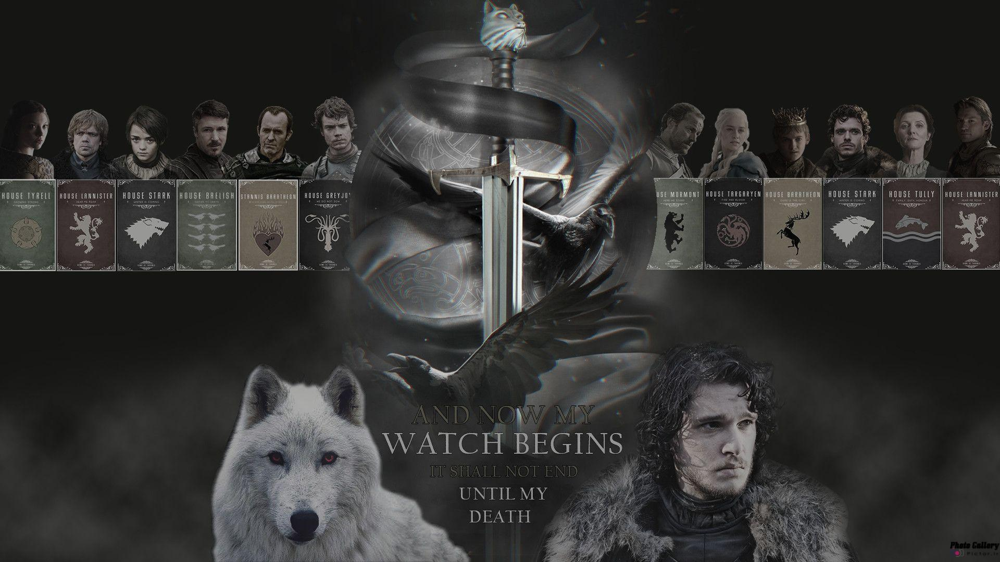
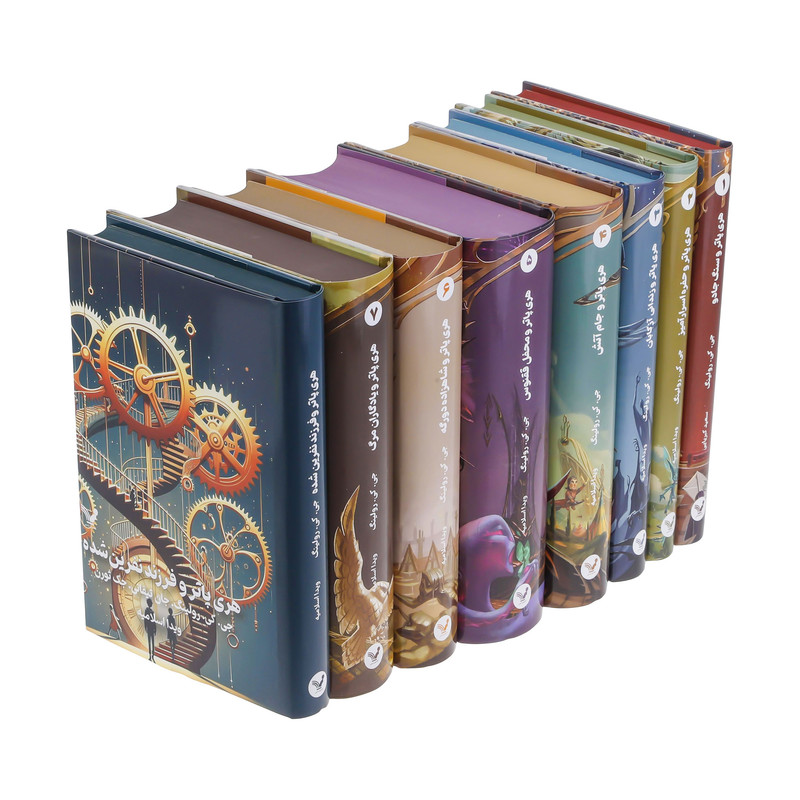
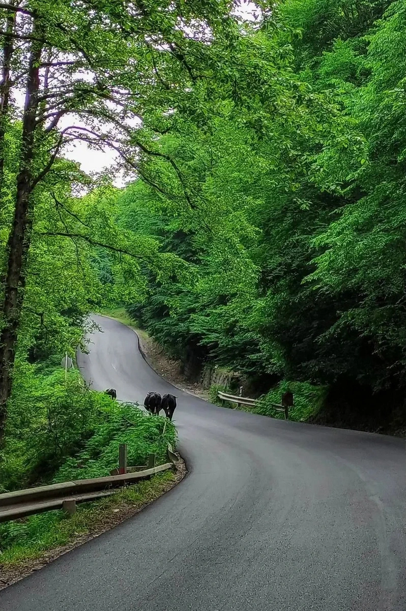
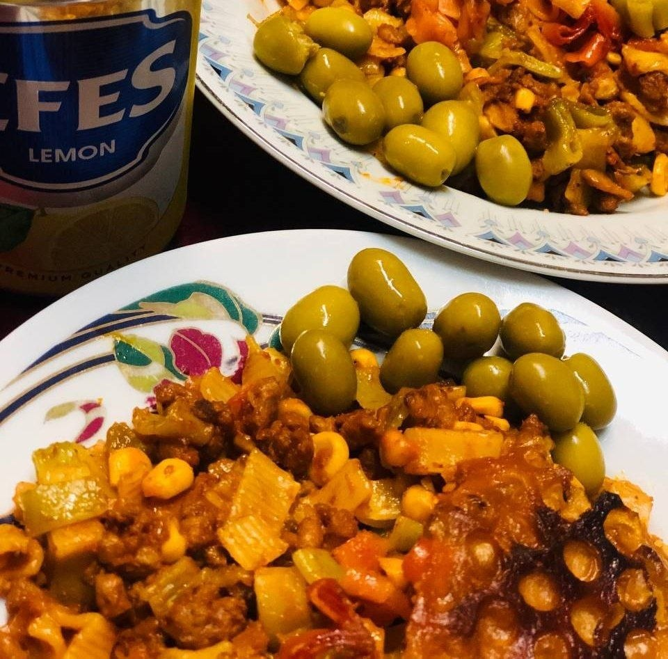
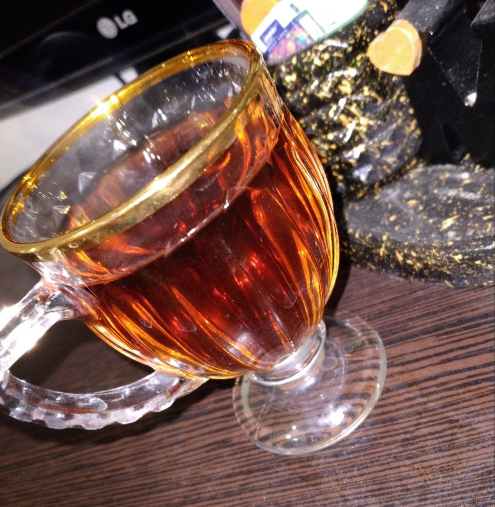

A world
beyond the code.
Maybe life is about enjoying the little moments! at least, that's what it means to me!
01 / FAMILY
Love Beyond Yourself!
Family is the most important part of my life. I have two younger brothers, Matin and Amir, and they both know just how much I love them :) They hold a very special place in my heart!

Amir
02 / INTERESTS
Things I enjoy

Films & Series
- Game of Thrones
- Money Heist
- The Walking Dead
- The Last of Us

Books
- Atomic Habits
- The Midnight Library
- Harry Potter
- Crime and Punishment
- The Silent Patient

Nature
- The Persian Gulf
- The Forests of Northern Iran
- Qaleh Shahrukh Village, Isfahan
- Persepolis, Shiraz
- Chaharbagh, Isfahan

Life with Friends
Thanks to my best friends, Raheleh and Reyhaneh, for all the wonderful moments together!

Coffee & Tea
They are a big part of my interests, and I absolutely adore them!
03 / A LITTLE PERSPECTIVE
A Note to My Future Self
**Dear Future Me,** I am giving everything I have right now, doing my very best to become someone you can be proud of! I will never give up on our dreams, and I will fight for them with strength and determination. I will never forget the bitter and sweet moments you've experienced, and I will cherish every one of them. I know you dream of traveling to many places and studying at great universities. I also know how much you enjoy teaching, and I truly hope you get to experience all of these things. **I hope we make it.** ❤️
Explore more
Interested in what I do?
Explore my academic background, research interests, computational projects, and work in bioinformatics.
Back to my portfolio